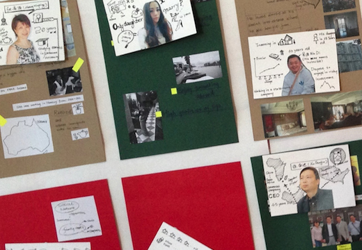
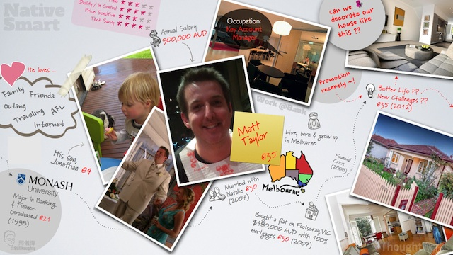
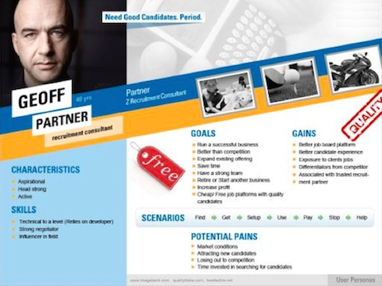
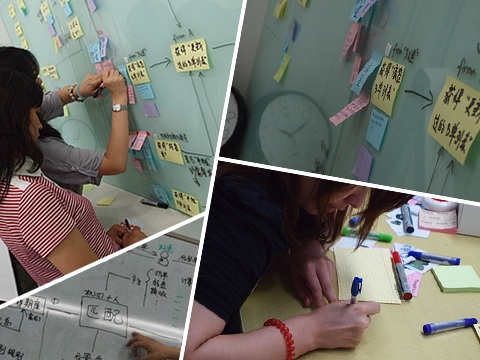
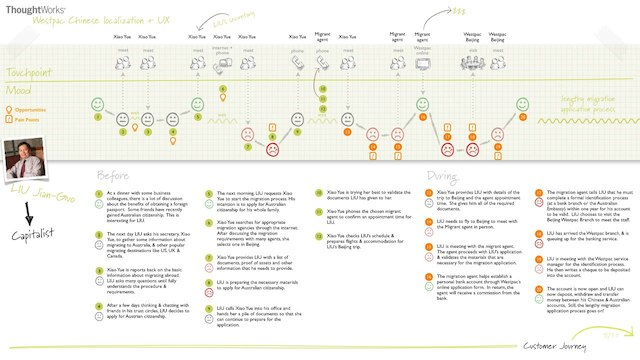
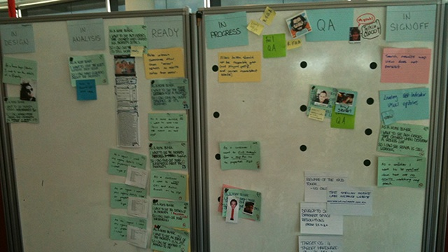
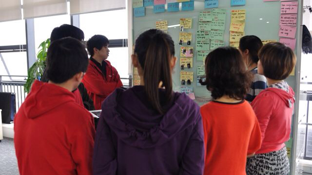
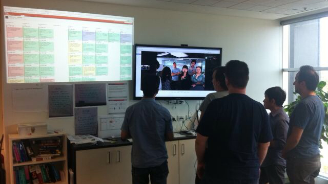
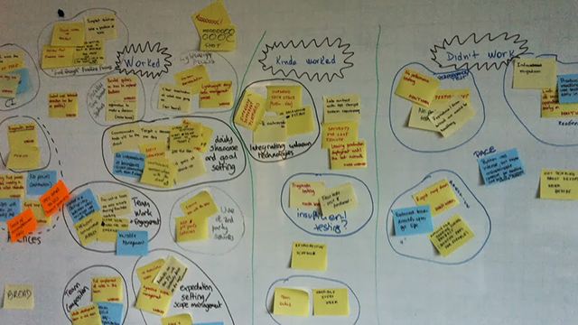

終於寫完我第二篇博客了… :p
在上篇博客中，我概略說說我在互聯網行業的這些年內，對一些現象和想法的一些看法（詳見《互聯網新世界＝思維革命》一文），也很高興不少身邊的朋友跟我反饋了不少意見。 或許，這次我說點比較實在點的東西吧，先說說我在行業內看到的一些嶄新工作方式。
究竟，他們怎樣的DNA和運作理念，能讓公司因應市場迅速應對和演進？
它們是怎樣做的？
前期策劃階段
市場調研？
太慢了！結果出來市場狀況都改變了..
Customer segmentation？
(註：就是我們常聽到，我們這款產品是針對二十到三十歲的白領，年薪於xx萬到xx萬之間…) 太籠統了！以用戶為中心的市場新秩序，你真的有辦法掌握用戶的潛在需求?
其實，現在我們是這樣理解市場的：
|  |  |  |
{kind=link}
{kind=link}
{kind=link}
我們就像查案或拍電影那樣，建立多個有血有肉的角色，我們叫做personas…
然後通過一系列的工作坊，以遊戲及互動方式，從一個概念，共同探索並製訂出下一步的方向，這個過程在行內通常稱之為ideation。 而在當中，亦通過理解最終戶的潛在想法，發掘當中可行的切入點，到最後找出更切合用戶的服務和方案。
|  |  |
{kind=link}
{kind=link}
由於客戶在業務發展中越趨重視，因此，近年也衍生了出一門專業，叫user experience，或experience design，小弟以往做諮詢的其中一個負責專業範疇就是這個。
其實UX當中也包含更多不同的工作和要求，而當中各種做法背後都有著各種原因的，容我分開在往後篇章一一說清楚吧.. :p
後期執行階段
我們是這樣協作和管理計劃進度的： 
{kind=link}
我們有不同形式的Casual小會議，這是其一： 
{kind=link}
跟客戶，或團隊在不同地方，也可以是有效共同工作和協作： 
{kind=link}
我們會有定期檢討，反饋並發掘改進的機制，讓我們因應團隊或市場等狀況適時調節改進 
{kind=link}
其實，這背後是有一個以擁抱改變為核心的一套敏捷(Agile)機制，其普及始於IT的創新企業，但近年慢慢看到該管理理念伸延到其他行業應用，最出名的例子是法國的Airbus飛機製造公司。這當中以協作為中心，並能因應市場迅速應對和演進。
但其實，一向覺得，方法永遠不是重點，也很討厭方法論。為了做而做，得出來的結果，也只會是貌合神離，自己也看到不少這情況…
那…究竟怎樣才能讓企業體現「互聯網思維」的精粹？
下回或許說說我當中的理解吧~ 希望能對大家有所啟發和幫助吧~
（P.S. 要覺得我的東西有點意思，觀迎在各平台關注我的動態和發佈內容 ;-).. 謝了~~)
| ＜上一篇 | 下一篇＞ |